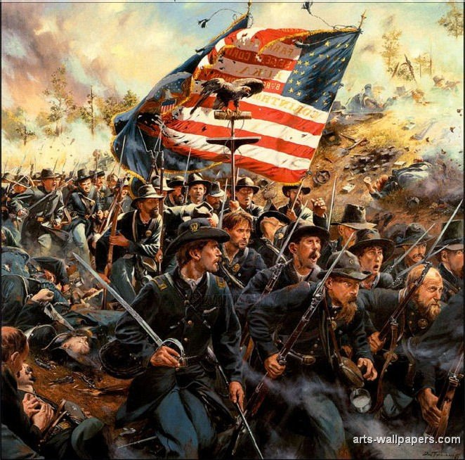

Decoration day 1885
The war was over a civil war that nearly brought a nation to its knees.
Countless men, young and old alikthe, gave their lives, not for land, resources, money,
even for personal glory.They gave their lives for their ideals.
A rare moment in history when a soldier got to fight for his believes.
I fought for the belief that all humankind was free under God I wanted to be a part
of something bigger than myself.
I wanted to help to bring the human race into the glory of freedom.
So I joined the boys in blue, knowing that this decision would cost me, my family.
For they believed in Virginia and would fight for her sovereignty.
I based my reasoning on morals, and they based theirs on
tradition and loyalty. I still remember that day my brother was wearing his typical blue overalls.
His bright blue eyes were filled with tears. We embraced for the final time.
We each knew the likelihood of seeing one another again was slim. I left because I believed in something more significant.
I felt like a martyr giving up something
I cared for to pursue the greater good.
I just didn’t understand how high that price would be.
It was December 11th, 1862, where I would fully understand the cost.
Our division was to cross a two-mile field under heavy cannon and rifle fire.
It was suicide. But we were soldiers. We did what we were told,
so we marched slowly.A cannonball hit in the middle of our line three fell.
Closer and closer, we came to the rebs line.
Then a canister shot hit, half of our division fell. Then we were in the range of rifle fire.
I could see the rebs lowering their guns.
It felt like I was court-martialed, then they fired.Three of us still stood.
I remembered looking down and seeing faces that
I knew that I loved all dead, all gone, never to be seen again.
Later I found out that my brother died that same day.
So much loss,
I began losing my beliefs my values, and I begged for the war to end even if it meant that the wrong side would claim victory.
Four years later, the boys in blue won, and now I stood holding my country's great flag watching girls
in white dresses put white flowers on other nameless soldiers’ graves.
All we know about him was that he was one of the thousands who died for his country.
We don’t know if he cared for the cause or was forced into a conflict that he didn’t understand, and we simply don't know.
